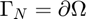
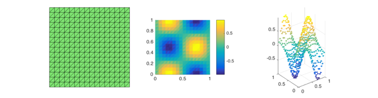

RATE OF CONVERGENCE OF MIXED FINITE ELEMENT METHOD (RT0-P0) FOR POISSON EQUATION
This example is to show the rate of convergence of mixed finite element (RT0-P0) approximation of the Poisson equation on the unit square:
for the following boundary conditions:
- Pure Dirichlet boundary condition. .
- Pure Neumann boundary condition. .
- Mix Dirichlet and Neumann boundary condition.
Written by Ming Wang and improved by Long Chen.
Contents
Setting
[node,elem] = squaremesh([0,1,0,1],0.25); pde = sincosNeumanndata; option.L0 = 1; option.maxIt = 4; option.printlevel = 1; option.elemType = 'RT0'; option.refType = 'red';
Pure Neumann boundary condition.
option.solver = 'mg';
option.solver = 'tripremixpoisson'; bdFlag = setboundary(node,elem,'Neumann'); mfemPoisson(node,elem,pde,bdFlag,option);
Triangular Preconditioner Preconditioned GMRES
#dof: 336, #nnz: 1103, V-cycle: 1, iter: 12, err = 9.64e-09, time = 0.01 s
Triangular Preconditioner Preconditioned GMRES
#dof: 1312, #nnz: 4639, V-cycle: 1, iter: 13, err = 5.74e-09, time = 0.06 s
Triangular Preconditioner Preconditioned GMRES
#dof: 5184, #nnz: 19007, V-cycle: 1, iter: 14, err = 2.97e-09, time = 0.1 s
Triangular Preconditioner Preconditioned GMRES
#dof: 20608, #nnz: 76927, V-cycle: 1, iter: 14, err = 7.88e-09, time = 0.16 s
Table: Error
#Dof h ||u-u_h|| ||u_I-u_h|| ||sigma-sigma_h||||sigma-sigma_h||_{div}
336 1.25e-01 1.35519e-01 5.10491e-02 1.00885e+00 1.01710e+01
1312 6.25e-02 6.55869e-02 1.07858e-02 5.03896e-01 5.14701e+00
5184 3.12e-02 3.27265e-02 2.54075e-03 2.51860e-01 2.58126e+00
20608 1.56e-02 1.63622e-02 6.24929e-04 1.25918e-01 1.29160e+00
Table: CPU time
#Dof Assemble Solve Error Mesh
336 0.00e+00 1.00e-02 0.00e+00 0.00e+00
1312 1.00e-02 6.00e-02 1.00e-02 0.00e+00
5184 2.00e-02 1.00e-01 2.00e-02 0.00e+00
20608 4.00e-02 1.60e-01 7.00e-02 1.00e-02
Pure Dirichlet boundary condition.
option.solver = 'mg';
option.solver = 'tripremixpoisson'; bdFlag = setboundary(node,elem,'Dirichlet'); mfemPoisson(node,elem,pde,bdFlag,option);
Triangular Preconditioner Preconditioned GMRES
#dof: 336, #nnz: 1232, V-cycle: 1, iter: 13, err = 5.14e-09, time = 0.01 s
Triangular Preconditioner Preconditioned GMRES
#dof: 1312, #nnz: 4896, V-cycle: 1, iter: 14, err = 4.17e-09, time = 0.04 s
Triangular Preconditioner Preconditioned GMRES
#dof: 5184, #nnz: 19520, V-cycle: 1, iter: 14, err = 4.55e-09, time = 0.11 s
Triangular Preconditioner Preconditioned GMRES
#dof: 20608, #nnz: 77952, V-cycle: 1, iter: 14, err = 5.28e-09, time = 0.18 s
Table: Error
#Dof h ||u-u_h|| ||u_I-u_h|| ||sigma-sigma_h||||sigma-sigma_h||_{div}
336 1.25e-01 1.29702e-01 3.08718e-02 1.00257e+00 1.01710e+01
1312 6.25e-02 6.53059e-02 7.92226e-03 5.03081e-01 5.14701e+00
5184 3.12e-02 3.27071e-02 1.99320e-03 2.51757e-01 2.58126e+00
20608 1.56e-02 1.63602e-02 4.99086e-04 1.25905e-01 1.29160e+00
Table: CPU time
#Dof Assemble Solve Error Mesh
336 0.00e+00 1.00e-02 1.00e-02 1.00e-02
1312 1.00e-02 4.00e-02 1.00e-02 0.00e+00
5184 2.00e-02 1.10e-01 3.00e-02 1.00e-02
20608 5.00e-02 1.80e-01 7.00e-02 1.00e-02

Mix Dirichlet and Neumann boundary condition.
option.solver = 'uzawapcg'; bdFlag = setboundary(node,elem,'Dirichlet','~(x==0)','Neumann','x==0'); mfemPoisson(node,elem,pde,bdFlag,option);
Uzawa-type MultiGrid Preconditioned PCG
#dof: 336, #nnz: 1200, V-cycle: 1, iter: 16, err = 6.09e-09, time = 0.02 s
Uzawa-type MultiGrid Preconditioned PCG
#dof: 1312, #nnz: 4832, V-cycle: 1, iter: 16, err = 7.58e-09, time = 0.06 s
Uzawa-type MultiGrid Preconditioned PCG
#dof: 5184, #nnz: 19392, V-cycle: 1, iter: 16, err = 9.33e-09, time = 0.18 s
Uzawa-type MultiGrid Preconditioned PCG
#dof: 20608, #nnz: 77696, V-cycle: 1, iter: 16, err = 9.13e-09, time = 0.45 s
Table: Error
#Dof h ||u-u_h|| ||u_I-u_h|| ||sigma-sigma_h||||sigma-sigma_h||_{div}
336 1.25e-01 1.30305e-01 3.49802e-02 1.00524e+00 1.01710e+01
1312 6.25e-02 6.53848e-02 8.95903e-03 5.03425e-01 5.14701e+00
5184 3.12e-02 3.27171e-02 2.25324e-03 2.51800e-01 2.58126e+00
20608 1.56e-02 1.63615e-02 5.64155e-04 1.25911e-01 1.29160e+00
Table: CPU time
#Dof Assemble Solve Error Mesh
336 1.00e-02 2.00e-02 0.00e+00 0.00e+00
1312 2.00e-02 6.00e-02 1.00e-02 1.00e-02
5184 2.00e-02 1.80e-01 2.00e-02 0.00e+00
20608 7.00e-02 4.50e-01 9.00e-02 1.00e-02
 Conclusion
The optimal rates of convergence for u and sigma are observed, namely, 1st order for L2 norm of u, L2 norm of sigma and H(div) norm of sigma. The 2nd order convergent rates between two discrete functions |uI-uh| and |sigmaI-sigmah| are known as superconvergence.
Triangular preconditioned GMRES and Uzawa preconditioned CG converges uniformly in all cases. Traingular preconditioner is two times faster than PCG although GMRES is used.